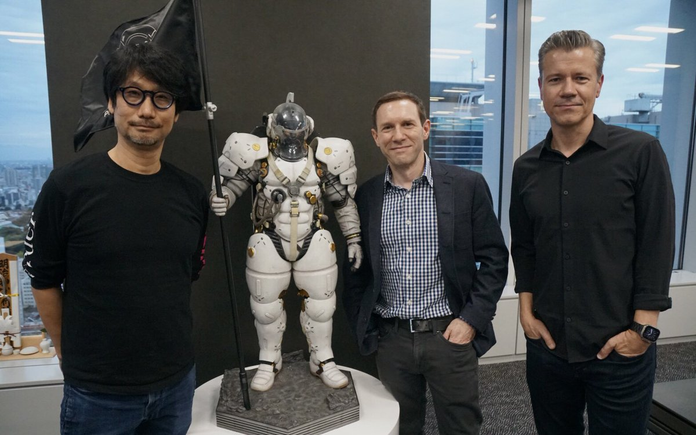

Garry's Mod
Garry's Mod es un entorno que te permite jugar libremente con el motor físico. Al contrario que en la mayoría de juego, no hay metas u objetivos predeterminados.

Garry's Mod es un entorno que te permite jugar libremente con el motor físico. Al contrario que en la mayoría de juego, no hay metas u objetivos predeterminados.

Cuando la madre de Isaac empieza a escuchar la voz de Dios exigiéndole un sacrificio para demostrar su fe, Isaac huye hacia el sótano para enfrentarse a montones de desquiciados enemigos, hermanos y hermanas perdidos, sus miedos y, finalmente, a su madre. The Binding of Isaac es un shooter de rol y acción generado aleatoriamente con fuertes elementos de roguelike. Mientras siguen a Isaac en su viaje, los jugadores encontrarán extraños tesoros que cambiarán la forma de Isaac dotándole de habilidades sobrehumanas que le permitirán enfrentarse a hordas de misteriosas criaturas, descubrir secretos y abrirse paso luchando hasta un lugar seguro.

Es la quinta entrega completa de la serie de videojuegos de carreras Gran Turismo producida para la consola Sony PlayStation 3.

Famoso juego musical, en el que podrás tocar las canciones del famoso grupo Metallica. Usando un controlador propio, con forma de guitarra/bajo.

Hollow Knight es una aventura de acción clásica en 2D ambientada en un vasto mundo interconectado. Explora cavernas tortuosas, ciudades antiguas y páramos mortales. Combate contra criaturas corrompidas, haz nuevas amistades con extraños insectos y resuelve los antiguos misterios que yacen en el corazón del reino.

Assassin's Creed: Origins es un videojuego de acción-aventura y RPG de la saga Assassin's Creed cuya fecha de lanzamiento fue el 27 de octubre de 2017.
Desde que comenzamos nuestra andadura con GammeraNest y como equipo creativo, hace ya diez años, asesorando a museos y otras compañías sobre cómo usar la narrativa de los videojuegos a su favor, siempre hemos pensado que el conocimiento debe ser compartido con todos si queremos que este mundo sea mejor y que la única forma de adquirirlo es trabajando duro y aprendiendo para posteriormente poder transmitirlo.

El videojuego de Electronic Arts (EA) Los Sims 4 ha pasado a ser de descarga gratuita desde este martes, un cambio que la compañía ha acompañado de modificaciones en sus servicios en línea, que afectan también a otros títulos como Command & Conquer, Mirror's Edge y Army of Two.

A pesar de que sus títulos suelen generar opiniones divididas, Kojima Productions es una de las desarrolladoras que más dan de qué hablar. Aunque la compañía aún no ha revelado oficialmente su próximo proyecto, con crípticos mensajes su jefe, Hideo Kojima, ha estado emocionando a los fans sobre una pronta revelación y las sospechas sobre Death Stranding se hacen más grandes.
El próximo 28 de octubre PlatinumGames lanza 'Bayonetta 3', uno de los juegos más esperados para la Nintendo Switch. El título es prometedor, pero su lanzamiento se ha convertido en un verdadero escándalo. Una actriz de doblaje ha puesto el grito en el cielo por un tema siempre sensible: según ella ofrecen sueldos miserables incluso en producciones que acaban generando millones y millones de dólares.


365h
122h

89h

44h
14h
2h